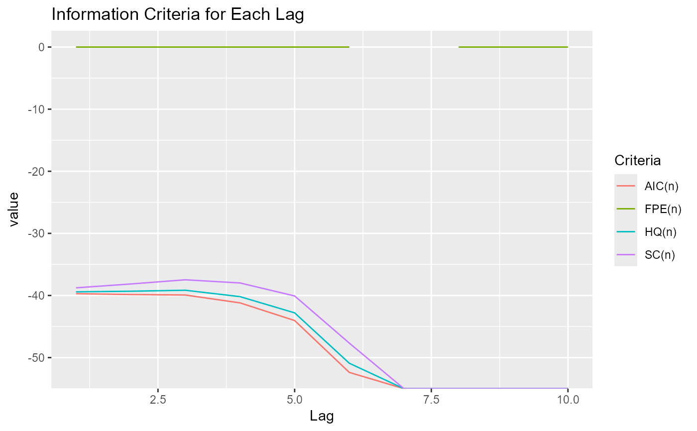

Plots the result of a call to VARselect.
Arguments
- x
A dataset (object coercible to data.frame) to pass to VARselect, or, directly, a result of such call.
- series
A character vector with series (column names) to consider. Defaults to all (
NULL).- lag.max
Integer for the highest lag order. Passed to VARselect.
- type
Type of deterministic regressors to include. Passed to VARselect.
- criteria
The criteria to be considered. Any of "AIC", "HQ", "SC", and "FPE".
- trans
A transformation to apply to each criteria result (vector). Can be a function, "none" (the default), or "index" to create index numbers.
- args_line
Additional arguments passed to ggplot2::geom_line.
- ...
Arguments passed to
varr:::select_setup, the generic function that formatsxinto a 'graphable' format. Use them only if you have created a method for some unsupported class ofx.Pass additional arguments to vars::VARselect here.
Examples
ggvar_select(vars::VARselect(freeny[-2]))
